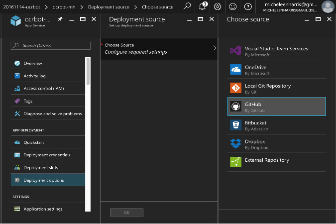
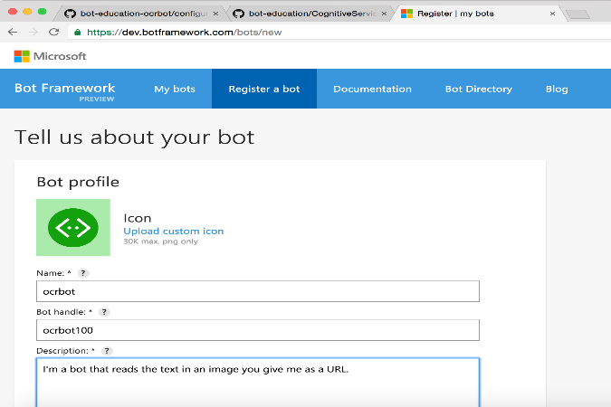
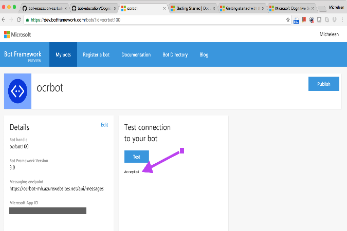

OCRBot Makes a Connection to the Cloud
Posted: 2016-11-15
A short conversation with OCRBot on Skype - using the Bot Framework on the Azure Cloud
Update: November 16, 2016 Microsoft announced the Azure Bot Service in Preview.
tl;dr: In Part 1 I built an OCR bot using the Bot Framework (BF) from Microsoft and the Cognitive Services Computer Vision API and conversed with it using the command line on my Mac. In this HowTo article I deploy the OCR bot to the cloud. If you keep reading you'll learn the technical know-how to take the bot code and turn it into deployed Skype bot.
"Hello, you've reached [name of company]. How can I help you today?" --says the mechanical voice on the other end of the phone
We know right away that this is a bot. But bots can be much more than a question and answer machine that deals in natural language. In fact, it doesn't have to be language intelligence at all.
I could, for instance, send my bot an audio clip of my favorite song and it could send back the name of the singer. Or I could send my bot an image and it could tell me what the scene is like, who is in it, what other objects are there, etc.
I could even leave intelligence out of it and use a bot to order a sandwich. Bots are just apps.
In this case our bot uses optical character recognition (OCR) to extract text from images. All of the code is here.
It almost goes without saying, but since the sky is really the limit, it's a good idea to be thoughtful in our creation and usage of these apps or bots. A current favorite quote is from Satya Nadella (from this article):
A.I. must have algorithmic accountability so that humans can undo unintended harm. We must design these technologies for the expected and the unexpected.
Now, let's continue our story of a chat bot, ocrbot. Ocrbot takes an image link as input and sends back the text found in that image, if any. I could imagine, then, doing more with that text (e.g. sentiment, key phrases) or extending this bot in other ways (e.g. speech, search).
The Bot Framework gives me an easy way to connect my bot so that it's compatible and available on channels like Slack, Skype, Facebook Messenger, Twilio, and more.
In the last post ("Building an OCR Chat Bot with the Microsoft Bot Framework on my Mac"), we met ocrbot and chatted with this bot locally (the upper path in the diagram below). This time we are going to deploy ocrbot to the cloud and communicate on a real channel (the lower path in the diagram below).

My process for connecting ocrbot to the cloud
To start, these are my subscriptions used:
- Github account (free) - for hosting code
- Azure account (free trial) - for continuous cloud deployment
- Microsoft account (free) - for Cognitive Services, BF and Skype
- Cognitive Services Computer Vision API key (free) - for OCR
And these are my steps at a glance:
- The ocrbot gets forked GitHub
- Fork the repo (easier to start with the existing code)
- Update the README to say something useful for my purposes
- The ocrbot gets a web app service for continuous deployment
- Create a Web App in the Azure Portal for the bot's endpoint
- Choose GitHub as my deployment source
- Get the Cognitive Services Computer Vision API key
- Add some environment variables
- The ocrbot gets registered on the BF
- Fill out profile including url endpoint
- Record app ID and app password after configuration
- Update app service with the new app ID and password
- The ocrbot takes a test
- Test connection in BF Developer's Portal
- Test on Skype
- Update the bot's message on GitHub and observe the change mid-conversation
The ocrbot gets forked on GitHub
I logged into GitHub and navigated to the bot-education-ocrbot repository. Next, I forked the repository so that it would appear in my GitHub account profile. From there, I can now use it, push/pull and annotate with markdown text.
 Forking the ocrbot repository
Forking the ocrbot repository
I like to change the README to say something specific to why I forked it like:
 Modifying README markdown file
Modifying README markdown file
The ocrbot gets a web app service for continuous deployment
Honestly, except for communicating on a channel with the bot, this is the coolest part in my opinion. I've set my bot up such that any change I commit or push to my GitHub repository, reflects immediately, even if I'm mid-conversation.
So, since I'm using Microsoft's cloud, Azure, I signed into the Azure portal at https://portal.azure.com. I then added a Web App by clicking the "+" icon and searching for "web app" (also, found under "Web and Mobile").
 Selecting Web App from portal menu
Selecting Web App from portal menu
I filled out all of the information and created the web app.
I then went to my resources in the portal (the blue cube - first icon below the "+" icon on the left panel) and selected my newly created resource group. In that resource group I found my web app (labelled as an "App Service"). It opened what we call a "blade" and in that I navigated to "Deployment options" from which I can select different sources. In this instance I selected "GitHub" as in:

Selecting GitHub from the web app deployment source blade (aka App Service) menu
Using this wizard, I authorized with my GitHub account credentials (through GitHub launched within the wizard) for the web app to be able to pull in my code each time a change happens. I selected my project or repo (bot-education-ocrbot in this case) and clicked "Ok." Continuous deployment deployed!
The final setup step in this section was to add placeholder variables for the BF app ID and password that I obtain in the next section. This is going to make it so that the BF and my app can talk to each other.
To do this I clicked on "Application Settings" under "Settings" (just below the "Deployment options"). This took me to a blade within which I scrolled down to "App settings" and entered in key-value pairs with filler text that correspond to the variable names in the configuration.js from my project (so, MICROSOFT_APP_ID and MICROSOFT_APP_PASSWORD). I didn't need to do it right at that point, but thought it'd be a good idea so I didn't overlook later (a string on my finger):
 App environment variables which correspond to the environment variables in ocrbot's config file
App environment variables which correspond to the environment variables in ocrbot's config file
The actual values will be filled in in the next section.
Also, in this settings blade, I created a variable corresponding to my Cognitive Services Computer Vision API key so I could use their OCR service. Therefore, I entered in a third variable, the VISION_API_KEY below my other two. I set it to my actual, real key from my subscription.
To get this free key, btw, I simply went to the Cognitive Services APIs website, My Account (I used my Microsoft Account - used to be called Live ID - which is just my gmail account linked up; if I had an xbox, hotmail, or outlook.com account I would already have one), and signed up for a trial subscription for Computer Vision. It's just the free tier of a Microsoft service.
Make sure to then save the settings in this blade.
The ocrbot gets registered on the BF
This part is pretty painless. Basically, we go to the Bot Framework Developer's Portal (same site where the docs and Bot Directory live) at https://dev.botframework.com, fill out a profile, do a small config and that's it.
I called my bot, ocrbot (doesn't have to be unique) and gave it a public handle, ocrbot100 (has to be globally unique).

My ocrbot's profile
For the Configuration part, the messaging endpoint is the web app service URL (I went back to the Azure portal to grab this URL from the web app service - In "Overview") appended "/api/messages" to the end of it and changed http to https, all of which so that the Bot Connector can route the messages correctly (the Bot Connector is a component of the BF which handles many things including routing messages). For me this was something like: https://nameofwebapp.azurewebsites.net/api/messages.
Also in the configuration part, a wizard took me through the process of getting the app ID and password and I just had to make sure to record the password in the pop-up and the app ID on the profile page. Yup, that's the same app ID and password I set up dummy environment variables earlier in the Azure portal. Now they will have real values.
Except for pasting these values back into the Azure portal, the registration in the BF Developer's portal is done. So, I went ahead and did the pasting.
The ocrbot takes a test
Finally, the really fun part: here, I got to check my bot's connection and then have a real conversation. Back in the BF Dev Portal I went to "Test connection to your bot" and clicked on the "Test" button as shown here which pings my bot's messaging endpoint to confirm a connection.

Testing in the Developer's Portal
I finally and with excitement scrolled down on the page shown above and clicked on "Add to Skype." After launching Skype (I had to make sure I was logged into Skype with the same Microsoft ID I was using in the Dev Portal) I tried sending some messages: a greeting and some image URLs from the web. I was curious to see if ocrbot liked Johnny Cash. Why not?
 ocrbot goes country - or at least reads country song lyrics from an image
ocrbot goes country - or at least reads country song lyrics from an image
To test the nifty continuous deployment from GitHub, I changed ocrbot's message on GitHub and sync'd that repository in the Azure Portal (under the web app service and "Deployment Options"). This happened mid-conversation:
 ocrbot's message updated mid-conversation
ocrbot's message updated mid-conversation
Well, that's it folks. To recap, ocrbot and I accomplished:
- Forking the original ocrbot repository from GitHub into my GitHub
- Deploying ocrbot as a web app service on Azure
- Registering ocrbot with the Bot Framework
- Taking ocrbot out for a spin on Skype
Ocrbot stays busy in the next topics in this blog series:
- Ocrbot makes a friend (on Slack)
- Ocrbot gets attached (attachments)
- Ocrbot learns to talk (speech APIs)
- Ocrbot goes to the store (bring your own data)
{kind=link}